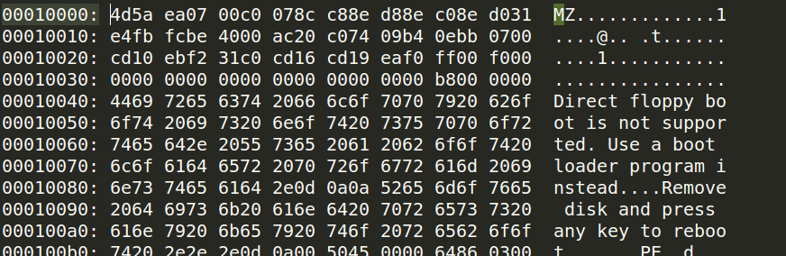
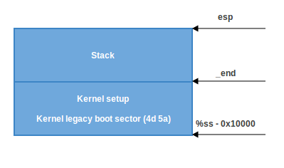

Kernel booting process. Part 1.
From the bootloader to the kernel
If you read my previous blog posts, you might have noticed that I have been involved with low-level programming for some time. I wrote some posts about assembly programming for x86_64 Linux and, at the same time, started to dive into the Linux kernel source code.
I have a great interest in understanding how low-level things work, how programs run on my computer, how they are located in memory, how the kernel manages processes and memory, how the network stack works at a low level, and many many other things. So, I decided to write yet another series of posts about the Linux kernel for the x86_64 architecture.
Note that I'm not a professional kernel hacker and I don't write code for the kernel at work. It's just a hobby. I just like low-level stuff, and it is interesting for me to see how these things work. So if you notice anything confusing, or if you have any questions/remarks, ping me on Twitter 0xAX, drop me an email or just create an issue. I appreciate it.
All posts will also be accessible at github repo and, if you find something wrong with my English or the post content, feel free to send a pull request.
Note that this isn't official documentation, just learning and sharing knowledge.
Required knowledge
- Understanding C code
- Understanding assembly code (AT&T syntax)
Anyway, if you're just starting to learn such tools, I will try to explain some parts during this and the following posts. Alright, this is the end of the simple introduction. Let's start to dive into the Linux kernel and low-level stuff!
I started writing these posts at the time of the 3.18 Linux kernel, and many things have changed since that time. If there are changes, I will update the posts accordingly.
The Magical Power Button, What happens next?
Although this is a series of posts about the Linux kernel, we won't start directly from the kernel code. As soon as you press the magical power button on your laptop or desktop computer, it starts working. The motherboard sends a signal to the power supply device. After receiving the signal, the power supply provides the proper amount of electricity to the computer. Once the motherboard receives the power good signal, it tries to start the CPU. The CPU resets all leftover data in its registers and sets predefined values for each of them.
The 80386 and later CPUs define the following predefined data in CPU registers after the computer resets:
IP 0xfff0
CS selector 0xf000
CS base 0xffff0000
The processor starts working in real mode. Let's back up a little and try to understand memory segmentation in this mode. Real mode is supported on all x86-compatible processors, from the 8086 CPU all the way to the modern Intel 64-bit CPUs. The 8086 processor has a 20-bit address bus, which means that it could work with a 0-0xFFFFF or 1 megabyte address space. But it only has 16-bit registers, which have a maximum address of 2^16 - 1 or 0xffff (64 kilobytes).
Memory segmentation is used to make use of all the address space available. All memory is divided into small, fixed-size segments of 65536 bytes (64 KB). Since we cannot address memory above 64 KB with 16-bit registers, an alternate method was devised.
An address consists of two parts: a segment selector, which has a base address; and an offset from this base address. In real mode, the associated base address of a segment selector is Segment Selector * 16. Thus, to get a physical address in memory, we need to multiply the segment selector part by 16 and add the offset to it:
PhysicalAddress = Segment Selector * 16 + Offset
For example, if CS:IP is 0x2000:0x0010, then the corresponding physical address will be:
>>> hex((0x2000 << 4) + 0x0010)
'0x20010'
But, if we take the largest segment selector and offset, 0xffff:0xffff, then the resulting address will be:
>>> hex((0xffff << 4) + 0xffff)
'0x10ffef'
which is 65520 bytes past the first megabyte. Since only one megabyte is accessible in real mode, 0x10ffef becomes 0x00ffef with the A20 line disabled.
Ok, now we know a little bit about real mode and its memory addressing. Let's get back to discussing register values after reset.
The CS register consists of two parts: the visible segment selector and the hidden base address. In real-address mode, the base address is normally formed by shifting the 16-bit segment selector value 4 bits to the left to produce a 20-bit base address. However, during a hardware reset the segment selector in the CS register is loaded with 0xf000 and the base address is loaded with 0xffff0000. The processor uses this special base address until CS changes.
The starting address is formed by adding the base address to the value in the EIP register:
>>> 0xffff0000 + 0xfff0
'0xfffffff0'
We get 0xfffffff0, which is 16 bytes below 4GB. This point is called the reset vector. It's the memory location at which the CPU expects to find the first instruction to execute after reset. It contains a jump (jmp) instruction that usually points to the BIOS (Basic Input/Output System) entry point. For example, if we look in the coreboot source code (src/cpu/x86/16bit/reset16.inc), we see:
.section ".reset", "ax", %progbits
.code16
.globl _start
_start:
.byte 0xe9
.int _start16bit - ( . + 2 )
...
Here we can see the jmp instruction opcode, which is 0xe9, and its destination address at _start16bit - ( . + 2).
We also see that the reset section is 16 bytes and is compiled to start from the address 0xfffffff0 (src/cpu/x86/16bit/reset16.ld):
SECTIONS {
/* Trigger an error if I have an unusable start address */
_bogus = ASSERT(_start16bit >= 0xffff0000, "_start16bit too low. Please report.");
_ROMTOP = 0xfffffff0;
. = _ROMTOP;
.reset . : {
*(.reset);
. = 15;
BYTE(0x00);
}
}
Now the BIOS starts. After initializing and checking the hardware, the BIOS needs to find a bootable device. A boot order is stored in the BIOS configuration, controlling which devices the BIOS attempts to boot from. When attempting to boot from a hard drive, the BIOS tries to find a boot sector. On hard drives partitioned with an MBR partition layout, the boot sector is stored in the first 446 bytes of the first sector, where each sector is 512 bytes. The final two bytes of the first sector are 0x55 and 0xaa, which designates to the BIOS that this device is bootable. Once the BIOS finds the boot sector, it copies it into a fixed memory location at 0x7c00, jumps to there and start executing it.
For example:
;
; Note: this example is written in Intel Assembly syntax
;
[BITS 16]
boot:
mov al, '!'
mov ah, 0x0e
mov bh, 0x00
mov bl, 0x07
int 0x10
jmp $
times 510-($-$$) db 0
db 0x55
db 0xaa
Build and run this with:
nasm -f bin boot.nasm && qemu-system-x86_64 boot
This will instruct QEMU to use the boot binary that we just built as a disk image. Since the binary generated by the assembly code above fulfills the requirements of the boot sector (we end it with the magic sequence), QEMU will treat the binary as the master boot record (MBR) of a disk image. Note that when providing a boot binary image to QEMU, setting the origin to 0x7c00 (using [ORG 0x7c00])
is unneeded.
You will see:
In this example, we can see that the code will be executed in 16-bit real mode. After starting, it calls the 0x10 interrupt, which just prints the ! symbol. The times directive will pad that number of bytes up to 510th byte with zeros and finishes with the two magic bytes 0xaa and 0x55.
You can see a binary dump of this using the objdump utility:
nasm -f bin boot.nasm
objdump -D -b binary -mi386 -Maddr16,data16,intel boot
A real-world boot sector has code for continuing the boot process and a partition table instead of a bunch of 0's and an exclamation mark. :) From this point onwards, the BIOS hands control over to the bootloader.
NOTE: As explained above, the CPU is in real mode. In real mode, calculating the physical address in memory is done as follows:
PhysicalAddress = Segment Selector * 16 + Offset
just as explained above. We have only 16-bit general purpose registers, which has a maximum value of 0xffff, so if we take the largest values the result will be:
>>> hex((0xffff * 16) + 0xffff)
'0x10ffef'
where 0x10ffef is equal to (1MB + 64KB - 16B) - 1. An 8086 processor (which was the first processor with real mode), in contrast, has a 20-bit address line. Since 2^20 = 1048576 is 1MB and 2^20 - 1 is the maximum address that could be used, this means that the actual available memory is 1MB.
In general, real mode's memory map is as follows:
0x00000000 - 0x000003FF - Real Mode Interrupt Vector Table
0x00000400 - 0x000004FF - BIOS Data Area
0x00000500 - 0x00007BFF - Unused
0x00007C00 - 0x00007DFF - Our Bootloader
0x00007E00 - 0x0009FFFF - Unused
0x000A0000 - 0x000BFFFF - Video RAM (VRAM) Memory
0x000B0000 - 0x000B7777 - Monochrome Video Memory
0x000B8000 - 0x000BFFFF - Color Video Memory
0x000C0000 - 0x000C7FFF - Video ROM BIOS
0x000C8000 - 0x000EFFFF - BIOS Shadow Area
0x000F0000 - 0x000FFFFF - System BIOS
At the beginning of this post, I wrote that the first instruction executed by the CPU is located at address 0xFFFFFFF0, which is much larger than 0xFFFFF (1MB). How can the CPU access this address in real mode? The answer is in the coreboot documentation:
0xFFFE_0000 - 0xFFFF_FFFF: 128 kilobyte ROM mapped into address space
At the start of execution, the BIOS is not in RAM, but in ROM.
Bootloader
There are a number of bootloaders that can boot Linux, such as GRUB 2 and syslinux. The Linux kernel has a Boot protocol which specifies the requirements for a bootloader to implement Linux support. This example will describe GRUB 2.
Continuing from before, now that the BIOS has chosen a boot device and transferred control to the boot sector code, execution starts from boot.img. Its code is very simple, due to the limited amount of space available. It contains a pointer which is used to jump to the location of GRUB 2's core image. The core image begins with diskboot.img, which is usually stored immediately after the first sector in the unused space before the first partition. The above code loads the rest of the core image, which contains GRUB 2's kernel and drivers for handling filesystems, into memory. After loading the rest of the core image, it executes the grub_main function.
The grub_main function initializes the console, gets the base address for modules, sets the root device, loads/parses the grub configuration file, loads modules, etc. At the end of execution, the grub_main function moves grub to normal mode. The grub_normal_execute function (from the grub-core/normal/main.c source code file) completes the final preparations and shows a menu to select an operating system. When we select one of the grub menu entries, the grub_menu_execute_entry function runs, executing the grub boot command and booting the selected operating system.
As we can read in the kernel boot protocol, the bootloader must read and fill some fields of the kernel setup header, which starts at offset 0x01f1 from the kernel setup code. You may look at the boot linker script to confirm the value of this offset. The kernel header arch/x86/boot/header.S starts from:
.globl hdr
hdr:
setup_sects: .byte 0
root_flags: .word ROOT_RDONLY
syssize: .long 0
ram_size: .word 0
vid_mode: .word SVGA_MODE
root_dev: .word 0
boot_flag: .word 0xAA55
The bootloader must fill this and the rest of the headers (which are only marked as being type write in the Linux boot protocol, such as in this example) with values either received from the command line or calculated during booting. (We will not go over full descriptions and explanations for all fields of the kernel setup header for now, but we shall do so when discussing how the kernel uses them. You can find a description of all fields in the boot protocol.)
As we can see in the kernel boot protocol, memory will be mapped as follows after loading the kernel:
| Protected-mode kernel |
100000 +------------------------+
| I/O memory hole |
0A0000 +------------------------+
| Reserved for BIOS | Leave as much as possible unused
~ ~
| Command line | (Can also be below the X+10000 mark)
X+10000 +------------------------+
| Stack/heap | For use by the kernel real-mode code.
X+08000 +------------------------+
| Kernel setup | The kernel real-mode code.
| Kernel boot sector | The kernel legacy boot sector.
X +------------------------+
| Boot loader | <- Boot sector entry point 0x7C00
001000 +------------------------+
| Reserved for MBR/BIOS |
000800 +------------------------+
| Typically used by MBR |
000600 +------------------------+
| BIOS use only |
000000 +------------------------+
When the bootloader transfers control to the kernel, it starts at:
X + sizeof(KernelBootSector) + 1
where X is the address of the kernel boot sector being loaded. In my case, X is 0x10000, as we can see in a memory dump:

How to get this memory dump in real mode?
root@parallels-vm:/usr/src/linux# more arch/x86/kernel/vmlinux.lds
...
SECTIONS
{
. = (0xffffffff80000000 + ALIGN(0x1000000, 0x200000));
phys_startup_64 = ABSOLUTE(startup_64 - 0xffffffff80000000);
.text : AT(ADDR(.text) - 0xffffffff80000000) {
_text = .;
_stext = .;
....
root@parallels-vm:/usr/src/linux# nm vmlinux|grep startup_64
0000000001000000 A phys_startup_64
ffffffff81000030 T secondary_startup_64
ffffffff810001f0 T __startup_64
ffffffff81000000 T startup_64
Here we can see the memory address of the entry point, which is 0x0000000001000000. Let's go ahead.
Before trying to debug the kernel, please see Booting a Custom Linux Kernel in QEMU and Debugging It With GDB
Step 1
Booting in QEMU
qemu-system-x86_64 -kernel /usr/src/linux-4.14.207/arch/x86_64/boot/bzImage -nographic -append "console=ttyS0 nokaslr" -initrd /data/busybox/busybox-1.28.0/initramfs.cpio.gz -S -s
Step 2
Attaching GDB to QEMU
gdb vmlinux
(gdb) target remote :1234
(gdb) hbreak *0x0000000001000000
(gdb) c
(gdb) dump binary memory /tmp/dump 0x0000 0x20000
Step 3
root@parallels-vm:/# hd /tmp/dump |grep -A 31 MZ
00010000 4d 5a ea 07 00 c0 07 8c c8 8e d8 8e c0 8e d0 31 |MZ.............1|
00010010 e4 fb fc be 40 00 ac 20 c0 74 09 b4 0e bb 07 00 |....@.. .t......|
00010020 cd 10 eb f2 31 c0 cd 16 cd 19 ea f0 ff 00 f0 00 |....1...........|
00010030 00 00 00 00 00 00 00 00 00 00 00 00 82 00 00 00 |................|
00010040 55 73 65 20 61 20 62 6f 6f 74 20 6c 6f 61 64 65 |Use a boot loade|
00010050 72 2e 0d 0a 0a 52 65 6d 6f 76 65 20 64 69 73 6b |r....Remove disk|
00010060 20 61 6e 64 20 70 72 65 73 73 20 61 6e 79 20 6b | and press any k|
00010070 65 79 20 74 6f 20 72 65 62 6f 6f 74 2e 2e 2e 0d |ey to reboot....|
00010080 0a 00 50 45 00 00 64 86 04 00 00 00 00 00 00 00 |..PE..d.........|
00010090 00 00 01 00 00 00 a0 00 06 02 0b 02 02 14 20 d5 |.............. .|
000100a0 80 00 00 00 00 00 e0 b8 79 01 80 46 00 00 00 02 |........y..F....|
000100b0 00 00 00 00 00 00 00 00 00 00 20 00 00 00 20 00 |.......... ... .|
000100c0 00 00 00 00 00 00 00 00 00 00 00 00 00 00 00 00 |................|
000100d0 00 00 00 90 fa 01 00 02 00 00 00 00 00 00 0a 00 |................|
000100e0 00 00 00 00 00 00 00 00 00 00 00 00 00 00 00 00 |................|
*
00010100 00 00 00 00 00 00 06 00 00 00 00 00 00 00 00 00 |................|
00010110 00 00 00 00 00 00 00 00 00 00 00 00 00 00 00 00 |................|
*
00010130 00 00 00 00 00 00 00 00 00 00 2e 73 65 74 75 70 |...........setup|
00010140 00 00 e0 41 00 00 00 02 00 00 e0 41 00 00 00 02 |...A.......A....|
00010150 00 00 00 00 00 00 00 00 00 00 00 00 00 00 20 00 |.............. .|
00010160 50 60 2e 72 65 6c 6f 63 00 00 20 00 00 00 e0 43 |P`.reloc.. ....C|
00010170 00 00 20 00 00 00 e0 43 00 00 00 00 00 00 00 00 |.. ....C........|
00010180 00 00 00 00 00 00 40 00 10 42 2e 74 65 78 74 00 |......@..B.text.|
00010190 00 00 20 93 80 00 00 44 00 00 20 93 80 00 00 44 |.. ....D.. ....D|
000101a0 00 00 00 00 00 00 00 00 00 00 00 00 00 00 20 00 |.............. .|
000101b0 50 60 2e 62 73 73 00 00 00 00 e0 b8 79 01 20 d7 |P`.bss......y. .|
000101c0 80 00 00 00 00 00 00 00 00 00 00 00 00 00 00 00 |................|
000101d0 00 00 00 00 00 00 80 00 00 c8 00 00 00 00 00 00 |................|
000101e0 00 00 00 00 00 00 00 00 00 00 00 00 00 00 00 ff |................|
000101f0 ff 21 01 00 32 09 08 00 00 00 ff ff 00 00 55 aa |.!..2.........U.|
The bootloader has now loaded the Linux kernel into memory, filled the header fields, and then jumped to the corresponding memory address. We now move directly to the kernel setup code.
The Beginning of the Kernel Setup Stage
Finally, we are in the kernel! Technically, the kernel hasn't run yet. First, the kernel setup part must configure stuff such as the decompressor and some memory management related things, to name a few. After all these things are done, the kernel setup part will decompress the actual kernel and jump to it. Execution of the setup part starts from arch/x86/boot/header.S at the _start symbol.
It may look a bit strange at first sight, as there are several instructions before it. A long time ago, the Linux kernel had its own bootloader. Now, however, if you run, for example,
qemu-system-x86_64 vmlinuz-3.18-generic
then you will see:

Actually, the file header.S starts with the magic number MZ (see image above), the error message that displays and, following that, the PE header:
#ifdef CONFIG_EFI_STUB
# "MZ", MS-DOS header
.byte 0x4d
.byte 0x5a
#endif
...
...
...
pe_header:
.ascii "PE"
.word 0
It needs this to load an operating system with UEFI support. We won't be looking into its inner workings right now but will cover it in upcoming chapters.
The actual kernel setup entry point is:
// header.S line 292
.globl _start
_start:
The bootloader (GRUB 2 and others) knows about this point (at an offset of 0x200 from MZ) and jumps directly to it, despite the fact that header.S starts from the .bstext section, which prints an error message:
//
// arch/x86/boot/setup.ld
//
. = 0; // current position
.bstext : { *(.bstext) } // put .bstext section to position 0
.bsdata : { *(.bsdata) }
The kernel setup entry point is:
.globl _start
_start:
.byte 0xeb
.byte start_of_setup-1f
1:
//
// rest of the header
//
Here we can see a jmp instruction opcode (0xeb) that jumps to the start_of_setup-1f point. In Nf notation, 2f, for example, refers to the local label 2:. In our case, it's label 1: that is present right after the jump, and contains the rest of the setup header. Right after the setup header, we see the .entrytext section, which starts at the start_of_setup label.
This is the first code that actually runs (aside from the previous jump instructions, of course). After the kernel setup part receives control from the bootloader, the first jmp instruction is located at the 0x200 offset from the start of the kernel real mode, i.e., after the first 512 bytes. This can be seen in both the Linux kernel boot protocol and the GRUB 2 source code:
segment = grub_linux_real_target >> 4;
state.gs = state.fs = state.es = state.ds = state.ss = segment;
state.cs = segment + 0x20;
In my case, the kernel is loaded at the physical address 0x10000. This means that segment registers have the following values after kernel setup starts:
gs = fs = es = ds = ss = 0x1000
cs = 0x1020
After the jump to start_of_setup, the kernel needs to do the following:
- Make sure that all segment register values are equal
- Set up a correct stack, if needed
- Set up bss
- Jump to the C code in arch/x86/boot/main.c
Let's look at the implementation.
Aligning the Segment Registers
First of all, the kernel ensures that the ds and es segment registers point to the same address. Next, it clears the direction flag using the cld instruction:
movw %ds, %ax
movw %ax, %es
cld
As I wrote earlier, grub2 loads kernel setup code at address 0x10000 by default and cs at 0x1020 because execution doesn't start from the start of the file, but from the jump here:
_start:
.byte 0xeb
.byte start_of_setup-1f
which is at a 512 byte offset from 4d 5a. We also need to align cs from 0x1020 to 0x1000, as well as all other segment registers. After that, we set up the stack:
pushw %ds
pushw $6f
lretw
which pushes the value of ds to the stack, followed by the address of the 6 label and executes the lretw instruction. When the lretw instruction is called, it loads the address of label 6 into the instruction pointer register and loads cs with the value of ds. Afterward, ds and cs will have the same values.
Stack Setup
Almost all of the setup code is for preparing the C language environment in real mode. The next step is checking the ss register's value and setting up a correct stack if ss is wrong:
movw %ss, %dx
cmpw %ax, %dx
movw %sp, %dx
je 2f
This can lead to 3 different scenarios:
sshas a valid value0x1000(as do all the other segment registers besidescs)ssis invalid and theCAN_USE_HEAPflag is set (see below)ssis invalid and theCAN_USE_HEAPflag is not set (see below)
Let's look at all three of these scenarios in turn:
sshas a correct address (0x1000). In this case, we go to label 2:
2: andw $~3, %dx
jnz 3f
movw $0xfffc, %dx
3: movw %ax, %ss
movzwl %dx, %esp
sti
Here we set the alignment of dx (which contains the value of sp as given by the bootloader) to 4 bytes and check if it is zero. If it is, we set dx to 0xfffc (The last 4-byte aligned address in a 64KB segment). If it is not zero, we continue to use the value of sp given by the bootloader (0xf7f4 in my case). Afterwards, we put the value of ax (0x1000) into ss. We now have a correct stack:

- The second scenario, (
ss!=ds). First, we put the value of _end (the address of the end of the setup code) intodxand check theloadflagsheader field using thetestbinstruction to see whether we can use the heap. loadflags is a bitmask header defined as:
#define LOADED_HIGH (1<<0)
#define QUIET_FLAG (1<<5)
#define KEEP_SEGMENTS (1<<6)
#define CAN_USE_HEAP (1<<7)
and as we can read in the boot protocol:
Field name: loadflags
This field is a bitmask.
Bit 7 (write): CAN_USE_HEAP
Set this bit to 1 to indicate that the value entered in the
heap_end_ptr is valid. If this field is clear, some setup code
functionality will be disabled.
If the CAN_USE_HEAP bit is set, we put heap_end_ptr into dx (which points to _end) and add STACK_SIZE (the minimum stack size, 1024 bytes) to it. After this, if dx is not carried (it will not be carried, dx = _end + 1024), jump to label 2 (as in the previous case) and make a correct stack.

- When
CAN_USE_HEAPis not set, we just use a minimal stack from_endto_end + STACK_SIZE:
BSS Setup
The last two steps that need to happen before we can jump to the main C code are setting up the BSS area and checking the "magic" signature. First, signature checking:
cmpl $0x5a5aaa55, setup_sig
jne setup_bad
This simply compares the setup_sig with the magic number 0x5a5aaa55. If they are not equal, a fatal error is reported.
If the magic number matches, knowing we have a set of correct segment registers and a stack, we only need to set up the BSS section before jumping into the C code.
The BSS section is used to store statically allocated, uninitialized data. Linux carefully ensures this area of memory is first zeroed using the following code:
movw $__bss_start, %di
movw $_end+3, %cx
xorl %eax, %eax
subw %di, %cx
shrw $2, %cx
rep; stosl
First, the __bss_start address is moved into di. Next, the _end + 3 address (+3 - aligns to 4 bytes) is moved into cx. The eax register is cleared (using the xor instruction), and the bss section size (cx - di) is calculated and put into cx. Then, cx is divided by four (the size of a 'word'), and the stosl instruction is used repeatedly, storing the value of eax (zero) into the address pointed to by di, automatically increasing di by four, repeating until cx reaches zero. The net effect of this code is that zeros are written through all words in memory from __bss_start to _end:

Jump to main
That's all! We have the stack and BSS, so we can jump to the main() C function:
call main
The main() function is located in arch/x86/boot/main.c. You can read about what this does in the next part.
Conclusion
This is the end of the first part about Linux kernel insides. If you have questions or suggestions, ping me on Twitter 0xAX, drop me an email, or just create an issue. In the next part, we will see the first C code that executes in the Linux kernel setup, the implementation of memory routines such as memset, memcpy, earlyprintk, early console implementation and initialization, and much more.
Please note that English is not my first language and I am really sorry for any inconvenience. If you find any mistakes please send me PR to linux-insides.